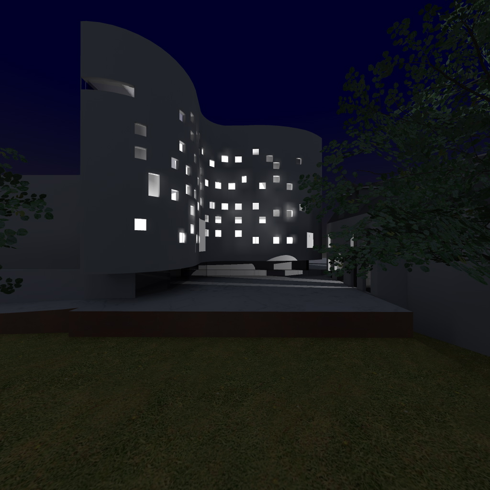

Arquitectura
Desenvolvemos projectos de arquitectura, interiores e design de espaços, desde a concepção de raiz à transformação e valorização de espaços existentes.
Acompanhamos cada projecto de forma integrada, da definição do conceito à concretização, procurando soluções que conciliem funcionalidade, estética e identidade. A nossa abordagem parte das necessidades de cada cliente, das características de cada espaço e dos objectivos a alcançar, com criatividade, rigor técnico e atenção ao detalhe.
A nossa abordagem procura responder às necessidades específicas de cada cliente, conciliando criatividade, funcionalidade e atenção ao detalhe.

À medida
No cinco atelier, acreditamos que cada projecto pode ter uma dimensão e um grau de acompanhamento diferentes.
Por isso, disponibilizamos desde pequenas consultas de aconselhamento e orientação, para quem procura apenas uma opinião especializada ou ajuda na tomada de decisões, até serviços completos chave na mão, em que assumimos o desenvolvimento e acompanhamento global do projecto.
Do aconselhamento pontual à concretização integral de um espaço, adaptamos o nosso serviço às necessidades de cada cliente.
Consultadoria
à distância
Através da nossa consultadoria à distância, é possível obter aconselhamento profissional sem necessidade de acompanhamento presencial.
Analisamos cada situação de forma personalizada e ajudamos a encontrar soluções para layout, materiais, cores, iluminação, mobiliário, decoração e reformulação de espaços, adaptando o serviço às necessidades concretas de cada cliente.
Empresas,
marcas e eventos
Na área empresarial e comercial, desenvolvemos projectos de store design e espaços corporativos, criando ambientes que traduzem a identidade e os valores de cada marca ou empresa.
Concebemos igualmente projectos espaciais para eventos, desde o conceito e organização do espaço à sua linguagem visual e experiência.
A estas áreas juntamos o design de comunicação associado aos projectos, criando identidades e elementos gráficos que permitem construir uma linguagem visual coerente entre o espaço, a marca e a sua comunicação.
Formação
O cinco atelier dedica-se ainda à formação, através de workshops e cursos à distância nas áreas da arquitectura, interiores, decoração, design de espaços e comunicação.
Partilhamos conhecimento e ferramentas práticas com profissionais, estudantes e todos aqueles que procuram aprofundar estas áreas.
Uma forma
de trabalhar
Mais do que projectar espaços, procuramos criar lugares com identidade, propósito e carácter, oferecendo uma abordagem flexível e próxima, que se adapta a cada pessoa, projecto ou negócio.
Desde uma pequena decisão que precisa de orientação até à concretização integral de um espaço, chave na mão.